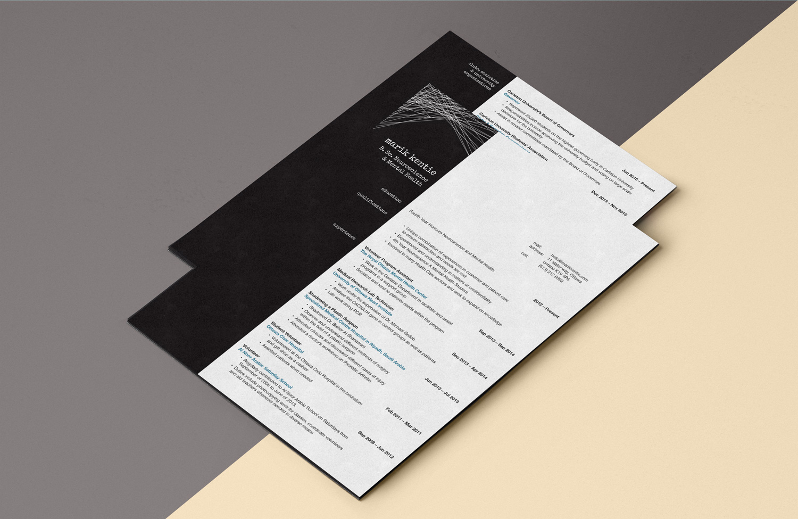
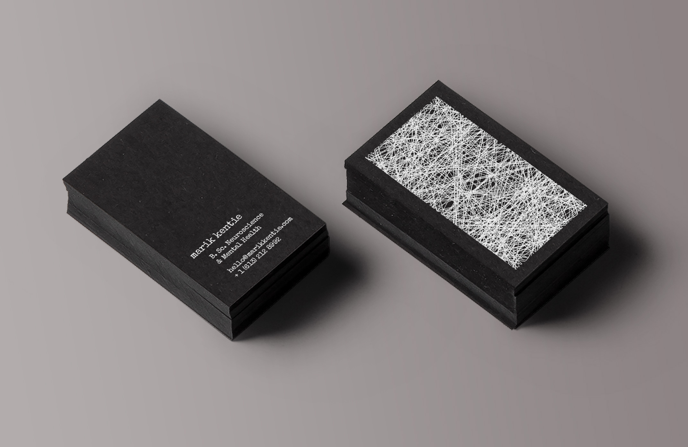
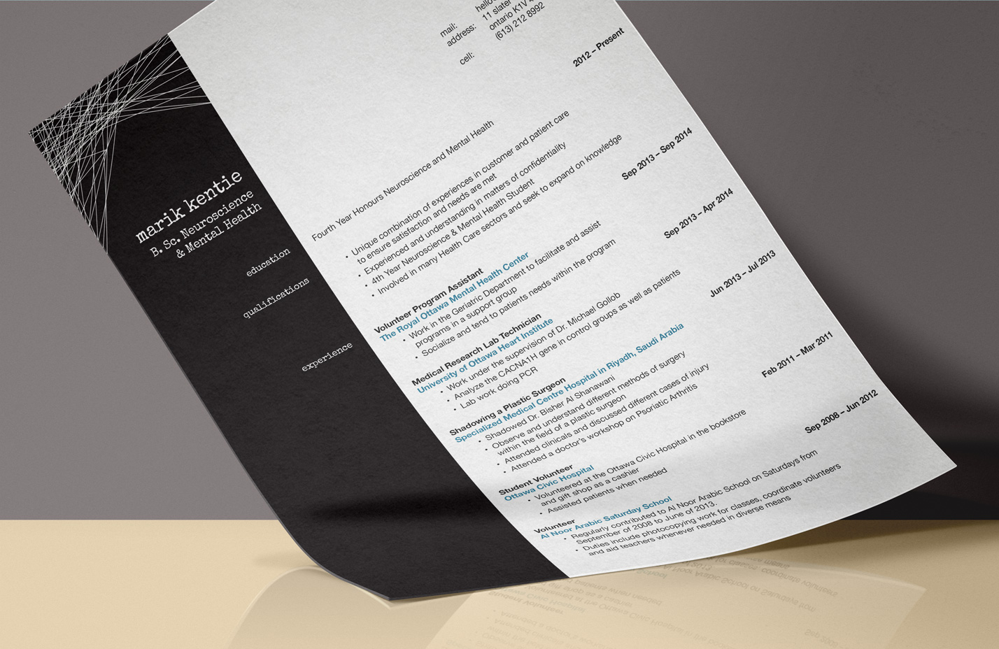

Inspiration Board
  Marik Kentie Identity
Brand Identity • Web Design
Marik is a Neuroscience & Mental health student in his fourth year of university. Marik came to me looking for an intriguing concept to brand himself as a neuroscience student, so we worked together on developing a bold brand that speaks to Marik's character. For privacy concerns, the client requested the use a fake profile to display the work online.